Chapter 6 Secondary Analysis
6.1 By Geographical Regions
6.1.1 Physician Demographics
data("zipcode")
data("fifty_states")
states_map <- map_data("state")
EHR_EPs %>% group_by(Business_State_Territory) %>% summarize(count = n()) %>%
ggplot() +
geom_map(aes(map_id = id), data = fifty_states, map = fifty_states, color="grey50", fill="grey90") +
geom_map(aes(map_id = tolower(Business_State_Territory), fill = count), map = fifty_states, color="grey50") +
coord_map() +
scale_fill_gradientn(colors = brewer.pal(6, "RdYlBu")) +
expand_limits(x=states_map$long, y=states_map$lat) +
theme_grey() +
theme(axis.text = element_blank(),
axis.line = element_blank(),
axis.ticks = element_blank(),
panel.border = element_blank(),
panel.grid = element_blank(),
axis.title = element_blank(),
legend.position = "bottom") +
ggtitle("Number of Physicians in Dataset")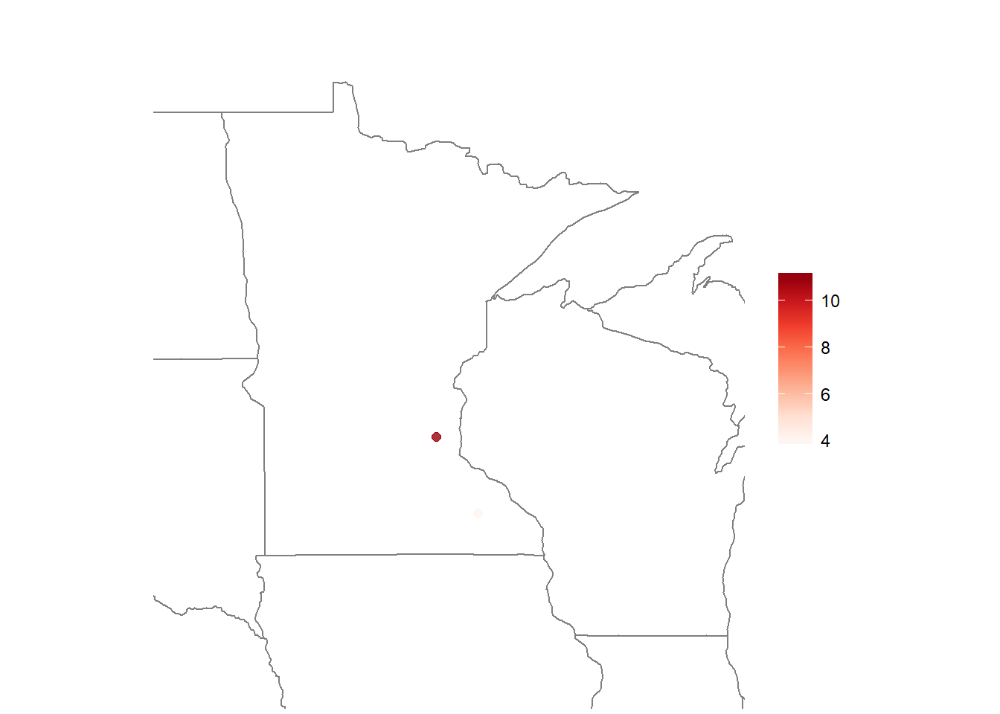
# gender distribution
EHR_EPs %>% group_by(Business_State_Territory) %>% summarize(fem = mean(gndr == "F"), male = mean(gndr == "M")) %>%
ggplot() +
geom_map(aes(map_id = id), data = fifty_states, map = fifty_states, color="grey50", fill="grey90") +
geom_map(aes(map_id = tolower(Business_State_Territory), fill = male), map = fifty_states, color="grey50") +
coord_map() +
scale_fill_gradientn(colors = brewer.pal(6, "RdYlBu")) +
expand_limits(x=states_map$long, y=states_map$lat) +
theme_grey() +
theme(axis.text = element_blank(),
axis.line = element_blank(),
axis.ticks = element_blank(),
panel.border = element_blank(),
panel.grid = element_blank(),
axis.title = element_blank(),
legend.position = "bottom") +
ggtitle("Distribution of Male Physicians")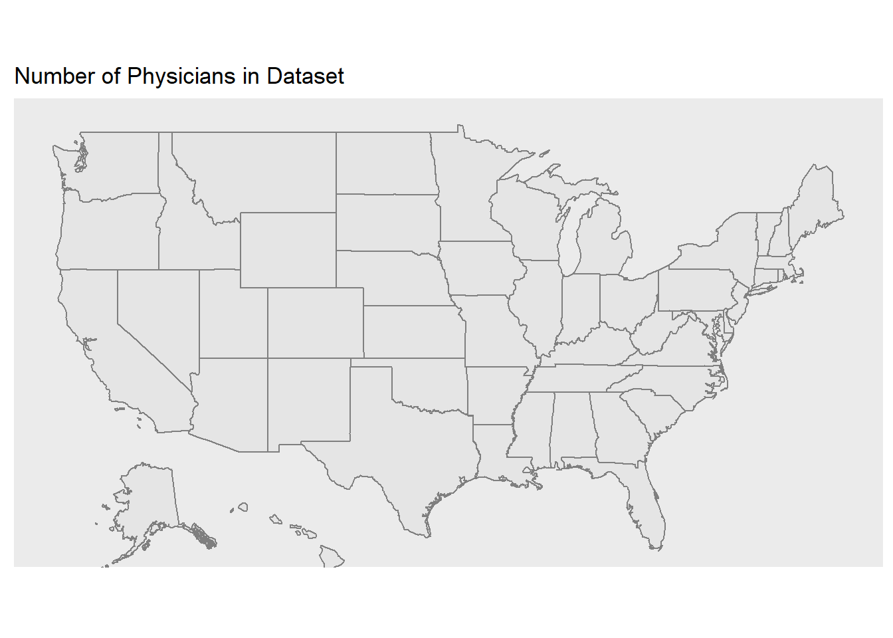
age <- EHR_EPs %>% filter(!is.na(grd_yr)) %>% group_by(Business_State_Territory) %>% summarize(yrsgrad = mean(2016 - grd_yr))
age %>%
ggplot() +
geom_map(aes(map_id = id), data = fifty_states, map = fifty_states, color="grey50", fill="grey90") +
geom_map(aes(map_id = tolower(Business_State_Territory), fill = yrsgrad), map = fifty_states, color="grey50") +
coord_map() +
scale_fill_gradientn(colors = brewer.pal(6, "RdYlBu")) +
expand_limits(x=states_map$long, y=states_map$lat) +
theme_grey() +
theme(axis.text = element_blank(),
axis.line = element_blank(),
axis.ticks = element_blank(),
panel.border = element_blank(),
panel.grid = element_blank(),
axis.title = element_blank(),
legend.position = "bottom") +
ggtitle("Years Since Graduation")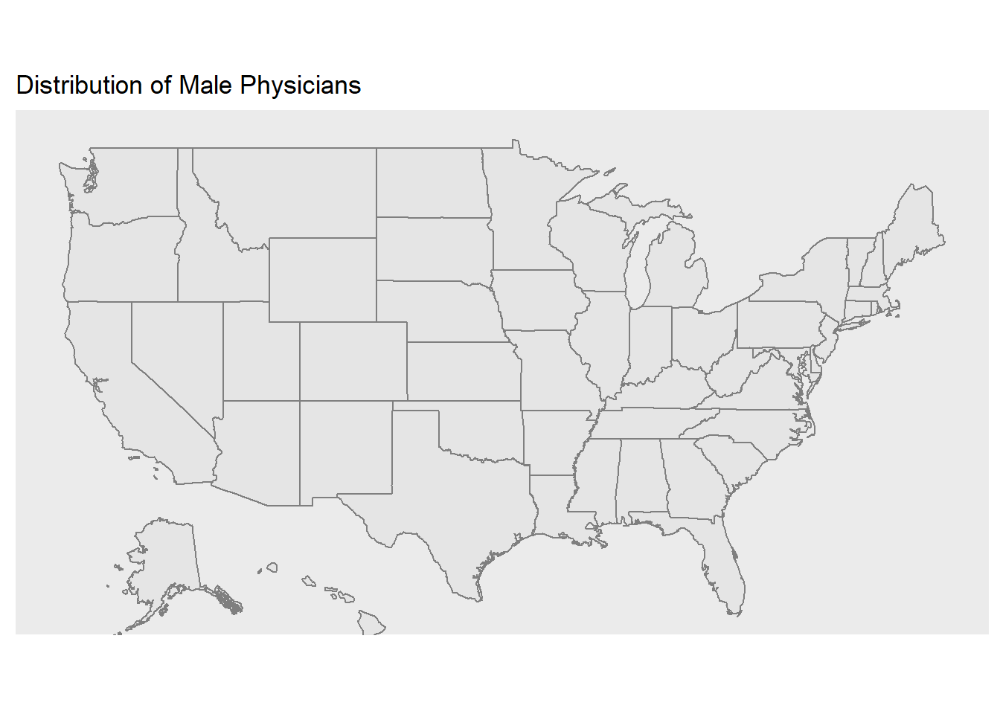
Among those Physicians in our Vendor data set, there were many more freshly graduated practitioners in Minnesota compared to the rest of the country. We interpreted this as being similar to an ‘age’ variable, since people who have 15 years since graduating & getting their degrees are more likely to be younger than those who have been graduated for 26 years.
mn <- subset(states_map, region %in% c("minnesota"))
zip_mapdata <- EHR_EPs %>%
filter(!is.na(grd_yr) & Business_State_Territory == "Minnesota") %>%
group_by(ZIP) %>%
summarize(yrsgrad = mean(2016 - grd_yr)) %>%
left_join(zipcode, by = c("ZIP" = "zip"))
#minnesota only
# zip_mapdata %>%
# ggplot() +
# geom_polygon(data=mn, aes(x=long, y=lat, group = group),colour="white", fill="grey70" ) +
# geom_point(aes(x=longitude, y=latitude, color = yrsgrad),size=2,alpha=.5) +
# coord_fixed(1.5) +
# theme_void()
#zoomed in on minnesota
zip_mapdata %>%
ggplot() +
geom_polygon(data=states_map, aes(x=long, y=lat, group = group),colour="grey50", fill="white") +
geom_point(aes(x=longitude, y=latitude, color = yrsgrad),size=2,alpha=.8) +
scale_color_gradientn(colors=brewer.pal(8, "Reds")) +
coord_fixed(xlim = c(-88, -98), ylim = c(42, 50), ratio = 1.5) +
theme_void() +
theme(legend.title = element_blank())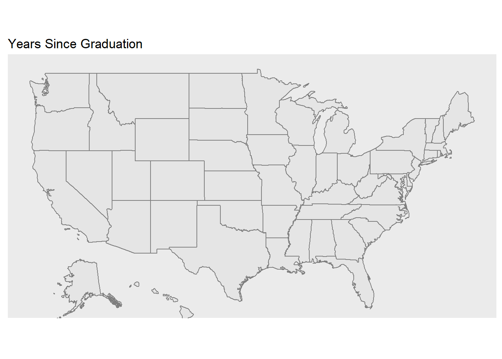
Here we can see that most of the Physicians we have are clustered near Minneapolis.
useehr <- EPs %>%
group_by(st) %>%
summarize(num = n(), used = sum(ehr == 1)) %>%
mutate(pct = used/num)
state_name <- c(state.name,"District Of Columbia")
states <- data.frame(state_name = state_name, state_abb = c(state.abb, "DC"))
useehr <- useehr %>% left_join(states, by = c("st" = "state_abb"))## Warning: Column `st`/`state_abb` joining character vector and factor,
## coercing into character vectoruseehr %>%
ggplot() +
geom_map(aes(map_id = id), data = fifty_states, map = fifty_states, color="grey50", fill="grey90") +
geom_map(aes(map_id = tolower(state_name), fill = pct), map = fifty_states, color="grey50") +
coord_map() +
scale_fill_gradientn(colors = brewer.pal(6, "RdYlBu")) +
expand_limits(x=states_map$long, y=states_map$lat) +
theme_gray() +
theme(axis.text = element_blank(),
axis.line = element_blank(),
axis.ticks = element_blank(),
panel.border = element_blank(),
panel.grid = element_blank(),
axis.title = element_blank(),
legend.position = "bottom") +
ggtitle("Percent EHR Usage")In our dataset overall, we had more blank information on EHR usage than we did on confirmed EHR usage, which is why the percentages are low overall. However, it is interesting to note that Alaska and Vermont had extremely low EHR usage, while the Midwest tended to have relatively more adoption. Perhaps Alaska and Vermont have more rural environments, while many of the EHR vendors are based in the Midwest.
#find what types of product settings exist
levels(EHR_EPs$Product_Setting)## [1] "" "Ambulatory" "Inpatient"#ambulatory vs inpatient numbers
EHR_EPs %>%
filter(Product_Setting != "") %>%
summarize(amb = sum(Product_Setting == "Ambulatory"),
inp = sum(Product_Setting == "Inpatient")) ## amb inp
## 1 21513 2290prod_setting <- EHR_EPs %>%
filter(Product_Setting != "") %>%
group_by(Business_State_Territory) %>%
summarize(num = n(),
amb = sum(Product_Setting == "Ambulatory"),
inpat = sum(Product_Setting == "Inpatient")) %>%
mutate(p_amb = amb/num, p_inpp = inpat/num)
# table for overall percentages in merge dataset
prod_setting_overall <- EHR_EPs %>%
summarize(total = n(),
amb = sum(Product_Setting == "Ambulatory"),
inpat = sum(Product_Setting == "Inpatient")) %>%
mutate("Ambulatory (Outpatient)" = amb/total, Inpatient= inpat/total) %>%
mutate(Place = "Overall") %>%
select(Place, "Ambulatory (Outpatient)", Inpatient)
prod_setting_overall %>% kable| Place | Ambulatory (Outpatient) | Inpatient |
|---|---|---|
| Overall | 0.8906231 | 0.0948044 |
ambulatory <- prod_setting %>%
ggplot() +
geom_map(aes(map_id = id), data = fifty_states, map = fifty_states, color="grey50", fill="grey90") +
geom_map(aes(map_id = tolower(Business_State_Territory), fill = p_amb), map = fifty_states, color="grey50") +
coord_map() +
scale_fill_gradientn(colors = brewer.pal(6, "RdYlBu")) +
expand_limits(x=states_map$long, y=states_map$lat) +
theme_gray() +
theme(axis.text = element_blank(),
axis.line = element_blank(),
axis.ticks = element_blank(),
panel.border = element_blank(),
panel.grid = element_blank(),
axis.title = element_blank(),
legend.position = "bottom") +
ggtitle("Product Setting = Ambulatory")
inpatient <- prod_setting %>%
ggplot() +
geom_map(aes(map_id = id), data = fifty_states, map = fifty_states, color="grey50", fill="grey90") +
geom_map(aes(map_id = tolower(Business_State_Territory), fill = p_inpp), map = fifty_states, color="grey50") +
coord_map() +
scale_fill_gradientn(colors = brewer.pal(6, "RdYlBu")) +
expand_limits(x=states_map$long, y=states_map$lat) +
theme_gray() +
theme(axis.text = element_blank(),
axis.line = element_blank(),
axis.ticks = element_blank(),
panel.border = element_blank(),
panel.grid = element_blank(),
axis.title = element_blank(),
legend.position = "bottom") +
ggtitle("Product Setting = Inpatient")
grid.arrange(ambulatory, inpatient, nrow = 1)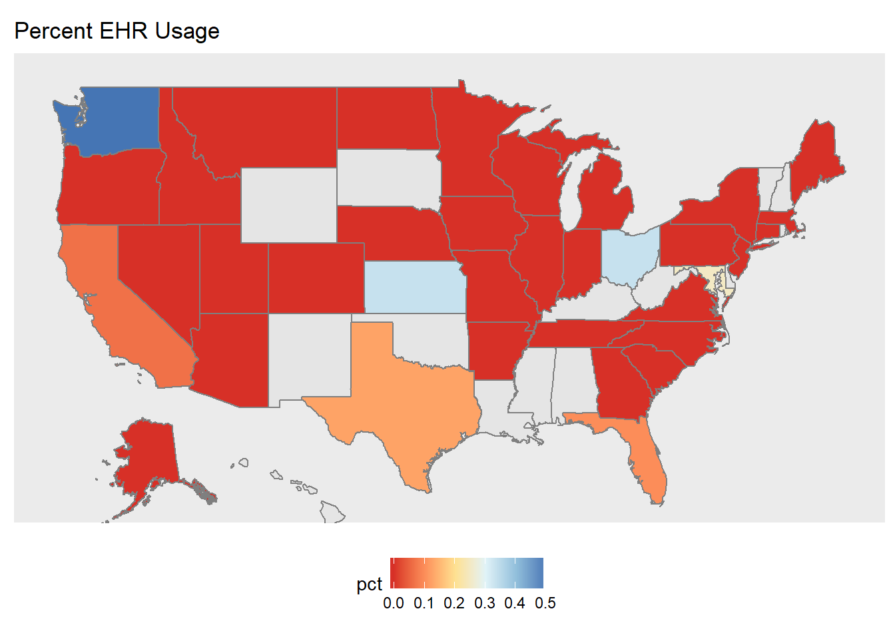
# california = outlier
cali <- EHR_EPs %>%
filter(Business_State_Territory == "California") %>%
summarize(total = n(),
amb = sum(Product_Setting == "Ambulatory"),
inpat = sum(Product_Setting == "Inpatient")) %>%
mutate("Ambulatory (Outpatient)" = amb/total, Inpatient = inpat/total) %>%
select("Ambulatory (Outpatient)", Inpatient)
prod_setting_overall <- bind_rows(prod_setting_overall,
data_frame(Place = "California",
"Ambulatory (Outpatient)" = cali$`Ambulatory (Outpatient)`,
Inpatient = cali$Inpatient
))
prod_setting_overall %>% kable| Place | Ambulatory (Outpatient) | Inpatient |
|---|---|---|
| Overall | 0.8906231 | 0.0948044 |
| California | 0.6114474 | 0.3838745 |
Product Setting refers to the type of practice setting that the EHR product is certified for. The possible settings are:
- Ambulatory: doctor’s offices, clinics, and other outpatient facilities
- Inpatient: hospitals and other long-term care facilities
We found that most EHR products were certified for ambulatory settings, by far. This extreme preference in ambulatory EHR products is consistent across the country, except in California where there is still a slight preference for ambulatory EHR products (among those adopting EHR’s in the incentive program), but it is less than the rest of the country.
# how many unique vendors
length(unique(factor(EHR_EPs$Vendor_Name)))## [1] 262# find top 10 vendors
top10 <- EHR_EPs %>%
filter(!is.na(Vendor_Name)) %>%
group_by(Vendor_Name) %>%
summarize(num = n()) %>%
arrange(desc(num)) %>% top_n(10)## Selecting by num#unique vendors
vendors <- as.vector(top10$Vendor_Name)
# distribution of top 10 vendors
EHR_EPs %>% filter(Vendor_Name %in% vendors) %>%
group_by(Vendor_Name) %>%
summarise(num = n()) %>%
ggplot(aes(x = reorder(Vendor_Name, num), y = num)) +
geom_bar(stat='identity') +
theme(axis.text.x = element_text(angle = 45, hjust = 1))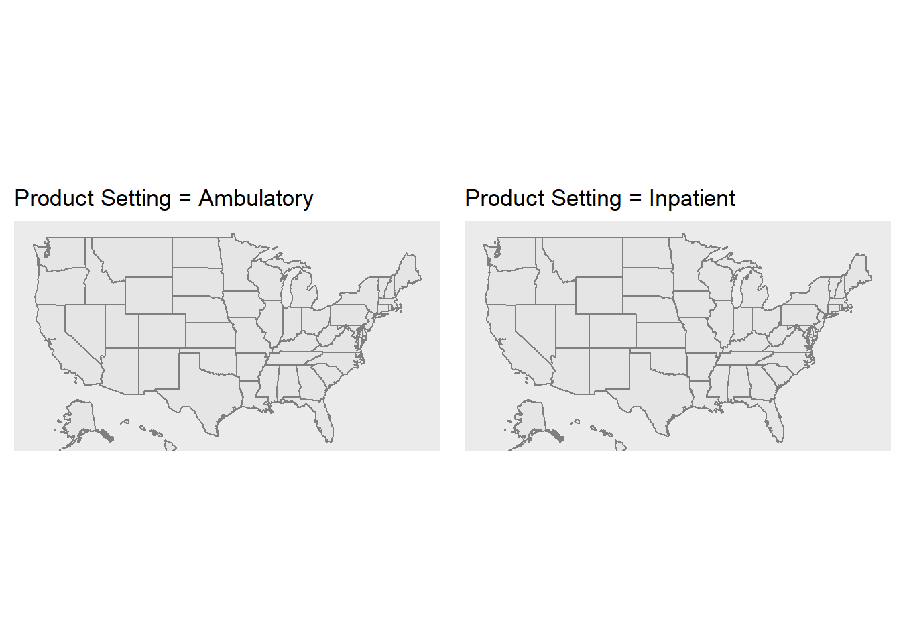
# percent usage of top 10
sum(top10$num)/nrow(EHR_EPs)## [1] 0.5940385pct_popvendors <- EHR_EPs %>%
group_by(Business_State_Territory) %>%
summarize(num = n(),
total_v = sum(Vendor_Name %in% vendors),
opp = num - total_v) %>%
mutate(p_vend = total_v/num, u_vend = opp/num)
pct_popvendors %>%
ggplot() +
geom_map(aes(map_id = id), data = fifty_states, map = fifty_states, color="grey50", fill="grey90") +
geom_map(aes(map_id = tolower(Business_State_Territory), fill = p_vend), map = fifty_states, color="grey50") +
coord_map() +
scale_fill_gradientn(colors = brewer.pal(6, "RdYlBu")) +
expand_limits(x=states_map$long, y=states_map$lat) +
theme_gray() +
theme(axis.text = element_blank(),
axis.line = element_blank(),
axis.ticks = element_blank(),
panel.border = element_blank(),
panel.grid = element_blank(),
axis.title = element_blank(),
legend.position = "bottom") +
ggtitle("Usage of Top 10 Vendors")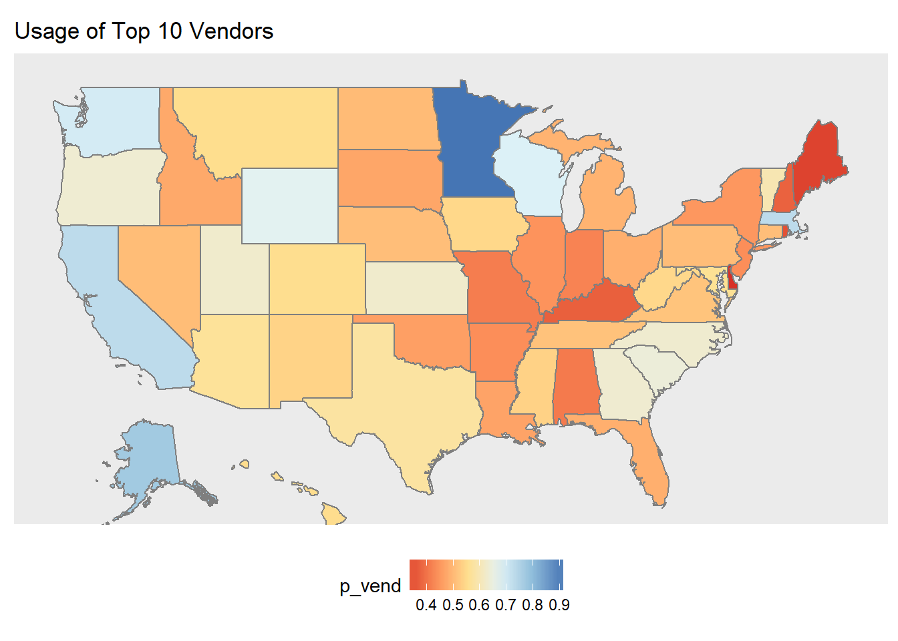
We found that the majority of EHR products used were from the top 10 vendors. Interestingly, though, Minnesota had almost 100% usage of the top 10 vendors. This could potentially be because many of the big vendors are based in the Midwest (ie Epic, Mayo Clinic, Cerner, etc).
#most common specialties in general
EHR_EPs %>% group_by(pri_spec) %>% summarize(num = n()) %>% arrange(desc(num))## # A tibble: 65 x 2
## pri_spec num
## <fctr> <int>
## 1 OPTOMETRY 5155
## 2 CHIROPRACTIC 3161
## 3 FAMILY PRACTICE 2637
## 4 DERMATOLOGY 2534
## 5 OPHTHALMOLOGY 2044
## 6 INTERNAL MEDICINE 1499
## 7 OBSTETRICS/GYNECOLOGY 1098
## 8 PODIATRY 738
## 9 PSYCHIATRY 652
## 10 ALLERGY/IMMUNOLOGY 401
## # ... with 55 more rows# most common state -> specialty
specialty <- EHR_EPs %>% group_by(Business_State_Territory, pri_spec) %>% summarize(num = n()) %>% arrange(Business_State_Territory, desc(num))
#check similar specialties
#EHR_EPs %>% filter(grepl("PSYCH", pri_spec)) %>% distinct(pri_spec)
specialty %>% ggplot(aes(Business_State_Territory, pri_spec)) +
geom_tile(aes(fill = num))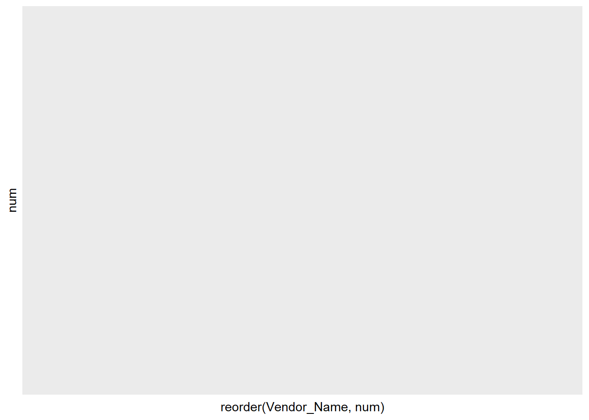
When it came to looking at patterns between primary specialty and states, it was nearly impossible to find useful information. There were too many states and too many different specialties to try to find significant correlations between the levels. Additionally, we tried to find group similar specialties but it did not make the results much more interpretable.
6.1.2 Hospital Demographics
#load hosp_all data & add long state names
state_name <- c(state.name,"District Of Columbia")
states <- data.frame(state_name = state_name, state_abb = c(state.abb, "DC"))
hosp_all <- hosp_clean %>% left_join(states, by = c("State" = "state_abb"))## Warning: Column `State`/`state_abb` joining character vector and factor,
## coercing into character vectorbeds <- hosp_all %>% filter(!is.na(Staffed_beds)) %>%
group_by(state_name) %>%
summarize(avgbed = mean(Staffed_beds))
beds %>%
ggplot() +
geom_map(aes(map_id = id), data = fifty_states, map = fifty_states, color="grey50", fill="grey90") +
geom_map(aes(map_id = tolower(state_name), fill = avgbed), map = fifty_states, color="grey50") +
coord_map() +
scale_fill_gradientn(colors = brewer.pal(6, "RdYlBu")) +
expand_limits(x=states_map$long, y=states_map$lat) +
theme_gray() +
theme(axis.text = element_blank(),
axis.line = element_blank(),
axis.ticks = element_blank(),
panel.border = element_blank(),
panel.grid = element_blank(),
axis.title = element_blank(),
legend.position = "bottom") +
ggtitle("Average Hospital Beds per hospital")
Vermont and Rhode Island had the lowest number of average hospital beds per hospital, which makes sense since they are small states. Connecticut and Florida had the highest average, suggesting that hospitals in that state tend to be bigger on average.
# patient days
hosp_all %>% filter(!is.na(Patient_days)) %>%
group_by(state_name) %>%
summarize(patient = mean(Patient_days)) %>%
ggplot() +
geom_map(aes(map_id = id), data = fifty_states, map = fifty_states, color="grey50", fill="grey90") +
geom_map(aes(map_id = tolower(state_name), fill = patient), map = fifty_states, color="grey50") +
coord_map() +
scale_fill_gradientn(colors = brewer.pal(6, "RdYlBu")) +
expand_limits(x=states_map$long, y=states_map$lat) +
theme_gray() +
theme(axis.text = element_blank(),
axis.line = element_blank(),
axis.ticks = element_blank(),
panel.border = element_blank(),
panel.grid = element_blank(),
axis.title = element_blank(),
legend.position = "bottom") +
ggtitle("Across states, mean patient days per hospital")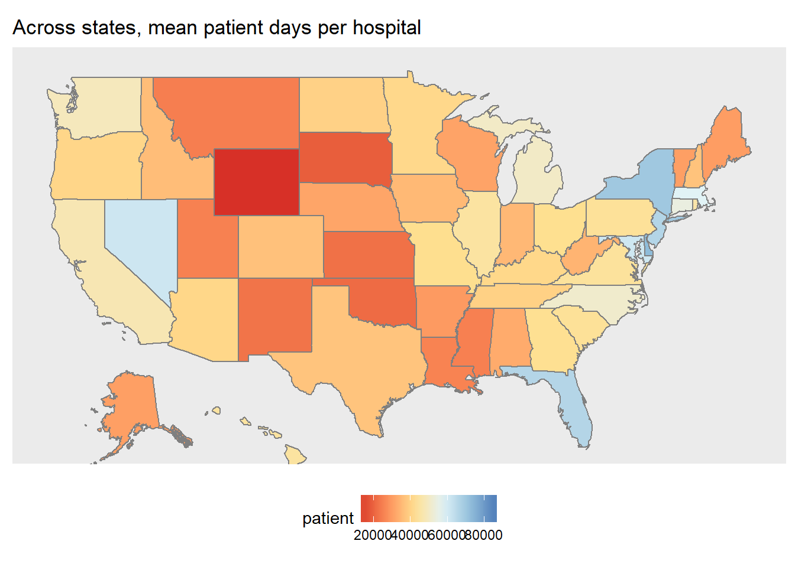
The distribution of average days at the hospital was mostly proportional to the distribution of average hospital beds from the previous map. The differences were:
- Florida had one of the highest averages for hospital beds (biggest hospitals) but did not have one of the highest average patient days (yay!)
- Massachusetts, which was slightly above average in the number of hospital beds, ended up being one of the states with the longest patient days on average.
#total discharges
hosp_all %>% filter(!is.na(Total_discharges)) %>%
group_by(state_name) %>%
summarize(discharges = mean(Total_discharges)) %>%
ggplot() +
geom_map(aes(map_id = id), data = fifty_states, map = fifty_states, color="grey50", fill="grey90") +
geom_map(aes(map_id = tolower(state_name), fill = discharges), map = fifty_states, color="grey50") +
coord_map() +
scale_fill_gradientn(colors = brewer.pal(6, "RdYlBu")) +
expand_limits(x=states_map$long, y=states_map$lat) +
theme_gray() +
theme(axis.text = element_blank(),
axis.line = element_blank(),
axis.ticks = element_blank(),
panel.border = element_blank(),
panel.grid = element_blank(),
axis.title = element_blank(),
legend.position = "bottom") +
ggtitle("Across states, mean discharges days per hospital on average")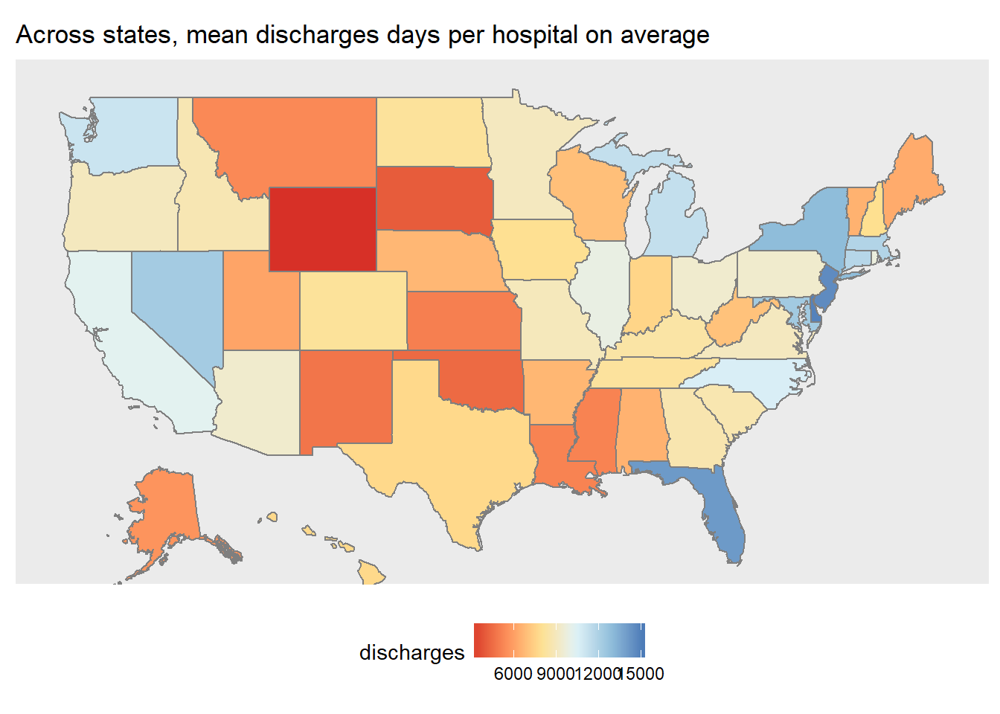
The distribution of average discharges was not very interesting - it was similar to the previous maps.
#avg revenue per discharge
revenue <- hosp_all %>% filter((Gross_patient_revenue != 0) & (Total_discharges != 0)) %>%
mutate(per = Gross_patient_revenue/Total_discharges) %>%
group_by(State) %>%
summarize(rev = mean(per))
revenue %>%
ggplot() +
geom_map(aes(map_id = id), data = fifty_states, map = fifty_states, color="grey50", fill="grey90") +
geom_map(aes(map_id = tolower(state_name), fill = rev), map = fifty_states, color="grey50") +
coord_map() +
scale_fill_gradientn(colors = brewer.pal(6, "RdYlBu")) +
expand_limits(x=states_map$long, y=states_map$lat) +
theme_gray() +
theme(axis.text = element_blank(),
axis.line = element_blank(),
axis.ticks = element_blank(),
panel.border = element_blank(),
panel.grid = element_blank(),
axis.title = element_blank(),
legend.position = "bottom") +
ggtitle("Across states, average revenue per discharge")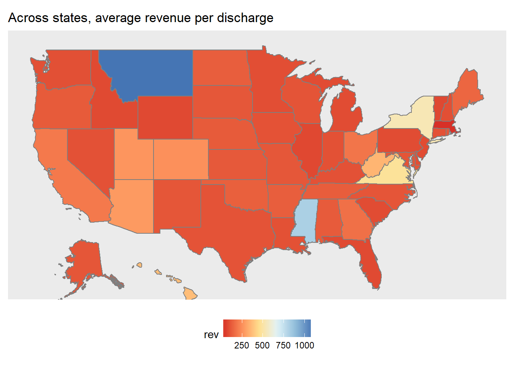
Looks like Montana has the highest average gross patient revenue per discharge.
6.1.3 Regional Conclusions
The regional analyses served mostly exploratory/informational purposes. While we noticed many patterns regarding the Midwest, it is not clear if the patterns are due to association or causation. For example, we saw that the Midwestern states tended to have higher rates of EHR usage compared to the rest of the country. However, we also saw that many of the “Top 10” vendors in our data set were also based in the Midwest. There could have been confounding effects - our data set may not have been representative of the entire country - Healthit.gov cited over 75% of Physician EHR adoption by 2015, while our data set could only match about 20% EHR usage in 2016. We could have had a skewed sample of Physicians that happened to have more EHR adopter living in the Midwest. Also, the first plot showed that we did have strong representation in Physician counts in Minnesota and California, but not as much in the rest of the country.
6.2 By EHR Vendors
6.2.1 Physician Demographics
Check the distributions of number of practice locations, states, products, and vendors among practitioners whom we have EHR usage information on. Counts of these distributions are the number of practitioners.
#specialty vs year since graduation
top_spec <- EHR_EPs %>%
filter(!is.na(pri_spec)) %>%
group_by(pri_spec) %>%
summarize(num = n()) %>%
arrange(desc(num)) %>% head(10)
spec_list <- c("OPTOMETRY", "CHIROPRACTIC", "DERMATOLOGY", "OPHTHALMOLOGY", "FAMILY PRACTICE", "INTERNAL MEDICINE", "OBSTETRICS/GYNECOLOGY", "PODIATRY", "PSYCHIATRY", "NEUROLOGY")
EHR_EPs %>%
filter(pri_spec %in% spec_list) %>%
mutate(yrsgrad = 2016 - grd_yr) %>%
ggplot(aes(x = pri_spec, y = yrsgrad)) +
geom_boxplot() +
theme(axis.text.x = element_text(angle = 45, hjust = 1))
#vendors vs year since graduation
EHR_EPs %>%
filter(Vendor_Name %in% vendors) %>%
mutate(yrsgrad = 2016 - grd_yr) %>%
ggplot(aes(x = Vendor_Name, y = yrsgrad)) +
geom_boxplot() +
theme(axis.text.x = element_text(angle = 45, hjust = 1))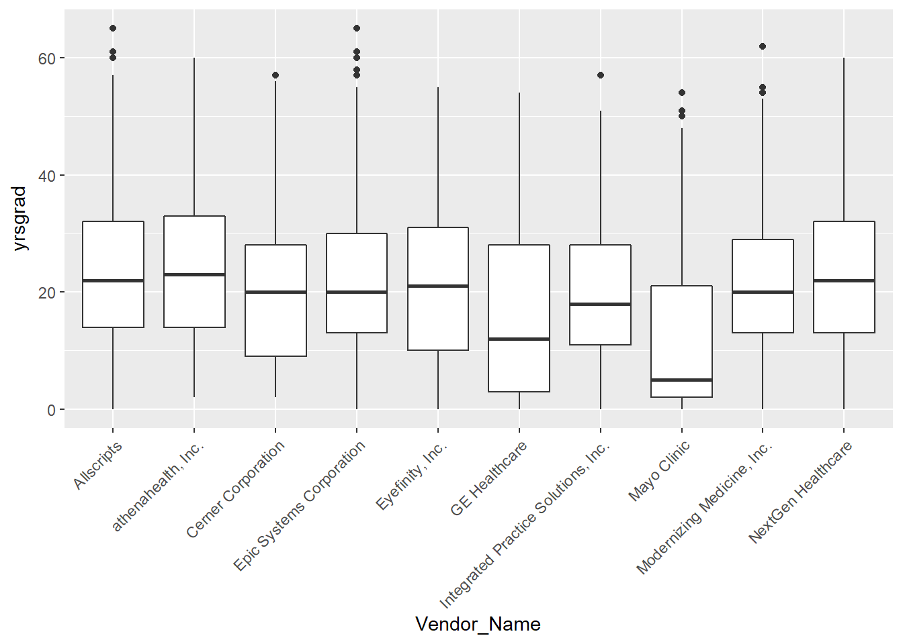
#top vendors vs top specialty
EHR_EPs %>%
filter((pri_spec %in% spec_list) & (Vendor_Name %in% vendors)) %>%
ggplot(aes(x = pri_spec, y = Vendor_Name)) +
geom_jitter(alpha = 0.2, color = "steelblue4") +
theme_minimal() +
theme(axis.text.x = element_text(angle = 45, hjust = 1),
legend.position = "none",
axis.title = element_blank()) +
ggtitle("Top 10 Primary Specialties versus Top 10 Vendors")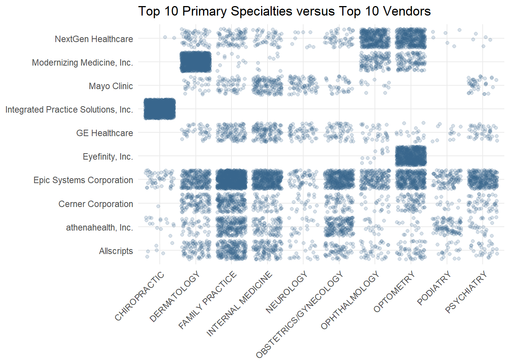
Interesting conclusions from the boxplots:
- Ophthalmology had the highest median years since graduation, which makes sense that we found that our EHR users had more years since graduation than non-EHR users
- Mayo Clinic and GE Healthcare were used by the youngest practitioners, both having median years since graduation under 10 years.
Interesting conclusions from the jitter plot:
- Integrated Practice Solutions, Inc, the second most popular vendor in our data set, is exclusively used by chiropractors. They also dominate the other vendors among the chiropractors.
- Eyefinity, Inc also has a specific audience, with only ophthalmologists and optometrists (eye doctors) using their products.
- Compulink Business Systems, Inc, is also very popular among the two eye specialties and their products seem to be targeted for a specific audience.
- While NextGen Healthcare is used by all the top 10 specialties, they are most popular among the ophthalmologists and optometrists.
- Modernizing Medicine Inc is very popular among dermatologists.
- Epic Systems, Cerner Corporation, athenahealth, and GE Healthcare are pretty consistently used across all the top 10 disciplines. Epic is the most consistently popular, however.